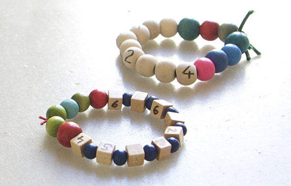

Facebook
Pinterest
Instagram
⌕ Buscar
ES
EN
DE
☰ Menú
Inicio
La casa
Accesorios
Decorar
Instrucciones
Ilustración
Cantimploras personalizadas
Cuaderno de manualidades y actividades 01
App Not Online Anymore
Blog
Fiestas
Navidad
Pascua
Halloween
Carnaval y disfraces
San Valentín
Cumpleaños
Día de la Madre/Padre
Vuelta al cole
Estaciones
Primavera
Verano
Otoño
Invierno
Qué hacer
Juguetes
Juegos
Imprimibles
Recetas y comida
Decoración
Pintar
Experimentos
Al aire libre
Aprender
Animales
Regalos y joyas
Construir y trucos
Otras manualidades
Material
Papel
Cartón
Rollos de papel
Reciclaje
Piedras
Hojas y naturaleza
Tela, coser y tejer
Inicio
›
Blog
›
Números
Números
Categoría
Actividad
Vuelta Al Cole 03
Actividad
Vuelta al cole 02
Actividad
Calendario
Material
Juego
Piedras
Torre de piedras
Actividad
Contar
Actividad
Àbaco
Actividad
Calcular
Números
Numero de Telefono

Material
Ordenando piedras
Ocasión
Lombrice
Actividad
Magia
Material
Torre de números
Actividad
Oruga de matemáticas
Actividad
Juego
Actividad
Medir
Actividad
Escarabajo
Actividad
Números
Rollos papel
Juego
Actividad
Nuestras setas
Otoño
Setas
Actividad
Clips
Actividad
Arbol y números
Actividad
Números 02
Página 1 / 2
Más antiguas →